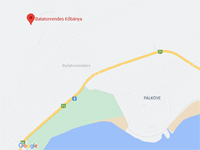

Balatonrendes II. - permi vöröshomokkõ

Rövid kõzetfizikai leírás:
A bánya haszonköve a perm idõszakban képzõdött vörös homokkõ. A felsõ permben képzõdött homokkõ (Balaton-felvidéki Homokkõ Formáció) változó szemnagyságú kvarc és egyéb idõsebb képzõdmények ádivolgozott, áthalmozott kõzeteibõl áll. A kõzet anyagát képezõ kvarchomok szemcsenagysága dominálóan 0,5 milliméter alatti. A friss törési felületeket, fõleg erõs fényben, a barnásvörös kõzetanyagba beágyazódott 1 milliméter körüli víztiszta kvarcszemcsék kristálylapjainak becsillanásai teszik változatossá. A homokkõ kötõanyaga agyagos, meszes, esetenként kovás is lehet. Építõipari szempontból a kovás kötõanyagú változat a jobb.
A balatonrendesi vörös homokkõ a térség hagyományos építõköve. Korábban számos helyen bányászták, a balatonrendesi bánya üzemszerûen a kb. 2010-es évekig mûködött. Jelenleg a térség arculati szempontból legfeontosabb építõköve csak bontásból szerezhetõ be, legális bányája nem üzemek.
A permi vörös homokkõ tömbben fejthetõ, legnagyobb mennyiségben megmunkálatlan formában, ciklopkõként került beépítésre. Jó idõtállósága miatt számos esetben vakolatlanul maradt, hangsúlyos megjelenése miatt a térség meghatározó településkép formáló anyagává vált.
Ritkábban faragták, faragott kerítés oszlopok, fedkövek, tömblépcsõk, feszületek, szobrok készültek felhasználásával.
Napjainkban - ugyan ritkában - de találkozhatunk vágott felületû díszítõ és burkoló termékekkel, valamint vörös homokkõ kiskockakõvel is.
A balatonrendesi vörös homokkõ vízépítési kõ is, a balatoni partvédõmûvek tájjellegû, hangulatos, mindnyájunk által megszokott és kedvelt építõköve.
A permi vörös homokkõ másik hagyományos elõfordulási térsége Pécs és környéke.
Kõzetfizikai jellemzõk:
Testsûrûség: 2300 kg/m3
Nyomószilárdság: változatos, átlag: 50 N/mm2
Fagyállóság: jó minõségû változatai 50 fagyasztási ciklus után is fagyállóak.
Képek
{kind=link}
{kind=link}
{kind=link}
{kind=link}
{kind=link}
{kind=link}
{kind=link}
{kind=link}
{kind=link}
{kind=link}
Linkek